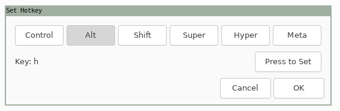

Tags: [linux][keyboard][autokey]
One way to have alth, altj, altk, altl mapped to ⬅, ⬆, ⬇, ➡ is to use autokey.
⚠ Note that autokey is an X11 app that will not work with Wayland ⚠
On Ubuntu 21.04 one can install autokey from the repos with sudo apt install autokey-gtk.
In autokey one can create four different scripts with the following content:
# script arrow_left
keyboard.send_keys("<left>")
# script arrow_right
keyboard.send_keys("<right>")
# script arrow_up
keyboard.send_keys("<up>")
# script arrow_down
keyboard.send_keys("<down>")Then on each script set a hotkey (The "Press to set" feature is useful to set combinations like alth):
